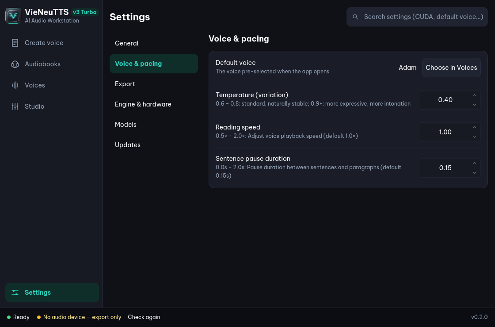

docs/screenshots/settings.png · 1120 × 1160, scrolled · English UI

{{p.n}}
{{p.n}}
{{p.title}}{{p.body}}
Scale: SettingsTab.qml is 2,420 lines, the largest file in the UI. Above this view sit engine family, Qwen device and variant, inference backend, precision, thread profile, the managed CUDA runtime and model source.